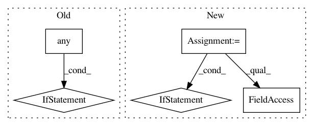

1cfe4b2736a91865a44d73ff179a52144af8a6ce,hypertools/tools/format_data.py,,format_data,#,6
Before Change
// if there are any nans in any of the lists, use ppca
if ppca is True:
if np.isnan(np.vstack(x)).any():
warnings.warn("Missing data: Inexact solution computed with PPCA (see https://github.com/allentran/pca-magic for details)")
x = fill_missing(x)
return x
After Change
if contains_num and contains_text:
// and if they have the same number of samples
if np.unique(np.array([i.shape[0] for i, j in zip(x, dtypes)])).shape[0]==1:
from .align import align as aligner
// align the data
warnings.warn("Numerical and text data with same number of "
"samples detected. Aligning data to a common space.")
x = aligner(x, align=align)
return x
In pattern: SUPERPATTERN
Frequency: 3
Non-data size: 5
Instances
Project Name: ContextLab/hypertools
Commit Name: 1cfe4b2736a91865a44d73ff179a52144af8a6ce
Time: 2018-01-22
Author: andrew.heusser@gmail.com
File Name: hypertools/tools/format_data.py
Class Name:
Method Name: format_data
Project Name: scikit-learn-contrib/categorical-encoding
Commit Name: 970491cd9b3cb21b043c22b50b4d09f9dd2481a7
Time: 2018-10-19
Author: jan@motl.us
File Name: category_encoders/woe.py
Class Name: WOEEncoder
Method Name: _score
Project Name: aertslab/pySCENIC
Commit Name: 0e6804ca93a4f76300134a126d5942114b71901c
Time: 2018-12-14
Author: vandesande.bram@gmail.com
File Name: src/pyscenic/cli/pyscenic.py
Class Name:
Method Name: prune_targets_command